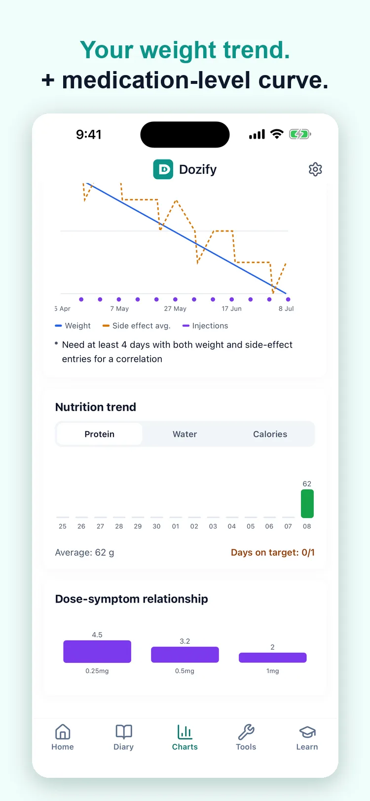
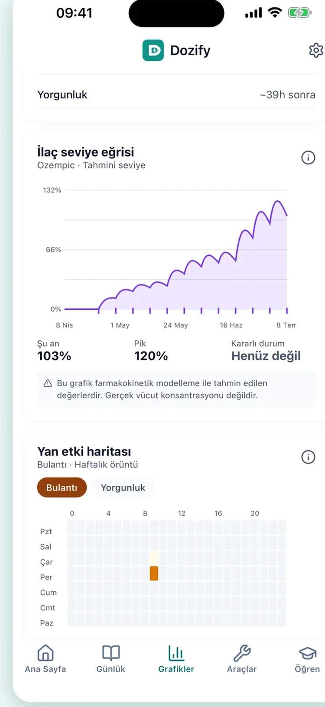

Your weight and your doses on one line
Kilon ve dozların aynı çizgide
The problem
The question is never just "what do I weigh". It is what the last few weeks have looked like, and what was happening in them — which dose, which week, what else you logged.
Sorun
Soru hiçbir zaman yalnızca "kaç kiloyum" değil. Son haftaların neye benzediği ve o haftalarda ne olduğu — hangi doz, hangi hafta, başka ne kaydettiğin.
What Dozify does
A trend, not a number
Your weight over three months, six, or a year, with the rate it has been moving and how far it is from your goal.
Apple Health does the typing
On iPhone, weight is read from Health automatically. If your scale writes there, you do not enter anything by hand.
No projection dressed up as a promise
The app shows what your own entries have done. It does not tell you what your body will do next.
Dozify ne yapıyor
Sayı değil, eğilim
Kilon üç ay, altı ay veya bir yıl boyunca; hangi hızla hareket ettiği ve hedefe ne kadar kaldığıyla.
Yazma işini Apple Health yapsın
iPhone'da kilo Health'ten otomatik okunur. Tartın oraya yazıyorsa elle bir şey girmezsin.
Vaat kılığında tahmin yok
Uygulama kendi kayıtlarının ne yaptığını gösterir; bedeninin bundan sonra ne yapacağını söylemez.


Who this helps
People who want the shape of a few months rather than this morning's number, and people whose weight is already going into Apple Health from a scale. It is also for anyone who has been asked at an appointment how the weight has moved since the last dose change and has had to guess.
Kimin işine yarar
Bu sabahki rakamı değil birkaç ayın şeklini görmek isteyenler ve kilosu zaten tartıdan Apple Health'e yazılanlar. Bir de randevuda "son doz değişikliğinden bu yana kilo nasıl gitti" diye sorulduğunda tahmin etmek zorunda kalmış olan herkes için.
Where it stops
The projection is arithmetic on the entries you have made — it extends what your own numbers have done and nothing more. It is not a prediction of what your body will do, it does not account for a dose change, an illness or a holiday, and it is not a target anyone has set for you. Dozify does not recommend a weight, a rate of loss or a diet.
Nerede duruyor
Projeksiyon, girdiğiniz kayıtlar üzerinde yapılan bir hesaptır — kendi rakamlarınızın yaptığını uzatır, fazlası değil. Vücudunuzun ne yapacağının tahmini değildir; doz değişikliğini, bir hastalığı ya da bir tatili hesaba katmaz ve kimsenin size koyduğu bir hedef değildir. Dozify kilo, kilo verme hızı ya da diyet önermez.
Private by default
Your health records stay on your device and are never uploaded. There is no account and no cloud sync. Usage statistics never carry a medication name or a symptom — details in the privacy policy.
Varsayılan olarak gizli
Sağlık kayıtların cihazında kalır ve hiçbir yere yüklenmez. Hesap yok, bulut senkronu yok. Kullanım istatistikleri hiçbir zaman ilaç adı veya belirti taşımaz — ayrıntılar gizlilik politikasında.
Download on the App Store App Store'dan indir
Questions
Sorular
Does it read my weight from Apple Health?
Kilomu Apple Health'ten okuyor mu?
On iPhone, yes. If your scale or another app writes weight to Health, Dozify reads it and you do not type anything. You can also enter it by hand.
iPhone'da evet. Tartınız ya da başka bir uygulama kiloyu Health'e yazıyorsa Dozify oradan okur, siz bir şey yazmazsınız. Elle de girebilirsiniz.
Kilograms or pounds?
Kilogram mı, pound mu?
Either. The unit is a setting and changing it converts what is already there rather than reinterpreting the numbers.
İkisi de. Birim bir ayardır; değiştirmek mevcut kayıtları yeniden yorumlamaz, dönüştürür.
Does the projection tell me when I will reach my goal?
Projeksiyon hedefime ne zaman ulaşacağımı söyler mi?
It tells you when you would reach it if the trend in your own entries continued unchanged. Bodies do not work like that, and the app says so on the screen rather than presenting the date as a plan.
Kendi kayıtlarınızdaki eğilim hiç değişmeden sürseydi ne zaman ulaşacağınızı söyler. Vücutlar böyle çalışmaz ve uygulama bu tarihi bir plan gibi sunmak yerine bunu ekranda yazar.
Can I log measurements as well?
Ölçüleri de kaydedebilir miyim?
Yes — waist, hip and the rest, on the same timeline as weight, for the months where the scale moves less than the tape does.
Evet — bel, kalça ve diğerleri, kiloyla aynı zaman çizelgesinde; tartının mezuradan daha az kımıldadığı aylar için.
Does my weight leave the phone?
Kilom telefondan çıkıyor mu?
No. It is stored on the device like the rest of your records. Reading from Apple Health happens on the phone; nothing is uploaded.
Hayır. Diğer kayıtlarınız gibi cihazda saklanır. Apple Health'ten okuma telefonda olur; hiçbir şey yüklenmez.
Read next
Guides, with their sources named: what GLP-1 actually is, managing common side effects and how to inject a pen, step by step.
Elsewhere in Dozify: the doctor report and the shot tracker.
Sonra şunlar
Kaynağı yazılı rehberler: GLP-1'in aslında ne olduğu, yaygın yan etkilerle baş etmek ve kalemin adım adım nasıl yapıldığı.
Dozify'ın diğer yanları: doktor raporu ve iğne takibi.